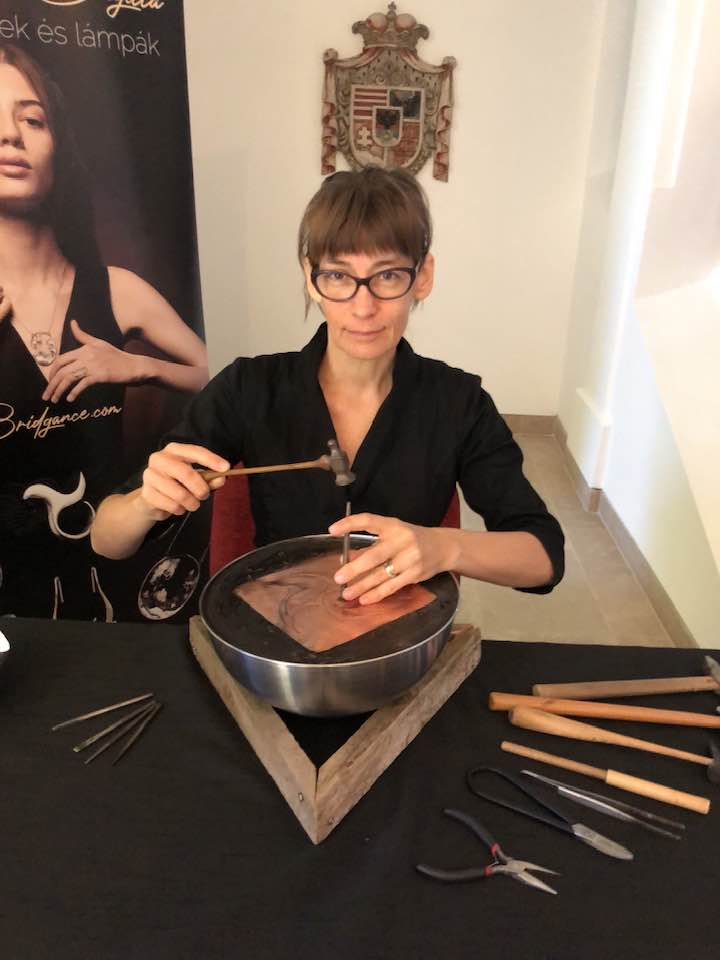

Artist & Goldsmith
Brigitta B. Horvath is a contemporary artist balancing fine art and applied art. She is known for her unique approach to metalworking, combining traditional techniques with modern innovations. Her artistic vision is characterized by an organic, metaphysical, and minimalist approach.